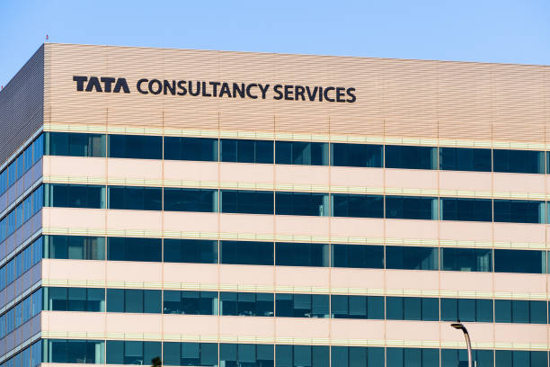

City : Chennai
Service Based Company




Tata Consultancy Services (TCS) in Chennai is a major IT hub for the Tata Group, employing tens of thousands of professionals across 16+ locations. It operates the 71-acre Siruseri campus (Asia’s largest TCS facility) and various city offices in Velachery, Thoraipakkam, and Cathedral Road, providing end-to-end software development and IT consulting.
TCS’s Chennai footprint is deeply rooted in its technology heritage, having launched the largest mainframe site in India in 1987. Today, the Chennai centers cater to global clients across IT services, consulting, and Business Process Services (BPS).
Tata Consultancy Services (TCS) in Chennai provides end-to-end IT services, consulting, and business process outsourcing. Operating out of major hubs like the 71-acre Siruseri campus, Tidel Park, and Velacheri, the offices serve as major delivery centers for global AI development, cloud migration, and domain-specific enterprise solutions.
Tata Consultancy Services (TCS) in Chennai operates major delivery centers across the city (including SIPCOT Siruseri and Velachery). The company supports local businesses and global enterprises by providing enterprise AI scaling, IT consulting, and software development solutions. Additionally, TCS supports the local community through tech initiatives, such as digitally powering the Cancer Institute (WIA).
📍 11th Floor, A Block, TIDEL Park, Canal Bank Road, Tharamani, Chennai – 600113.
📞 044 6616 3555
📍 ETL Infrastructure Services Ltd IT SEZ, 200 Feet Radial Road, Perungudi, Chennai – 600097
📞 044 6616 8888
📍 SIPCOT IT Park, Siruseri, Chennai – 603103
📞 044 6742 2222


Zoho Corporation is a global technology company headquartered in Chennai, India, that develops cloud-based business software suite and productivity tools. Founded in 1996 by Sridhar Vembu and Tony Thomas, it is famously bootstrapped, privately held, and profitable, serving over 150 million users worldwide.
The bulk of Zoho's operations, including its core research and development (R&D), is headquartered in the city.
Zoho Corporation is a global technology company headquartered at Estancia IT Park, GST Road, in Chennai. It provides over 55 cloud-based software products for CRM, finance, email, and HR. Because of its Chennai base, local businesses receive direct R&D proximity, optimized data centers, and specialized implementation support.
To get your systems up and running, you can utilize the Zoho Partner Finder to find certified local consultants. These partners handle data migration, user training, and same-timezone on-site support for local companies.
Zoho Corporation is a global SaaS giant headquartered at Estancia IT Park on GST Road, Maraimalai Nagar, Chennai. They help local enterprises and global users operate digitally by providing over 60 integrated cloud-based applications, spanning CRM, Finance (Zoho Books), IT management, and HR, all managed from their massive Chennai campus.